교통기사 (2005-09-04 기출문제)
1과목: 교통계획
1. 중복 산정을 피하기 위해 경제성 평가에서 항시 제외되는 비용 항목은?
- 주차료
- 통행료
- 휘발유세
- 건설비
(정답률: 알수없음)

2. 도시 교통의 일반적인 특성에 관한 설명 중 옳지 않은 것은?
- 도시교통은 대량 수송을 필요로 한다.
- 도시교통은 통행목적을 달성하기 위해 도시 내의 각 지점을 연결해 주는 단거리 교통이다.
- 도시교통은 하루 중 오전과 오후 2회에 걸쳐 피크현상이 발생된다.
- 도시교통은 도시 전체에 걸쳐 통행이 균등하며 정시성이 약하다.
(정답률: 알수없음)
3. 교통계획사업평가의 경제성 분석기법 중의 하나로서 할인율을 이용하여 이것이 사회적 기회비용보다 높으면 사업의 수익성이 있다고 보는 기법은?
- B/C
- NPV
- FYBCR
- IRR
(정답률: 알수없음)
4. 교통수단의 특성에 따른 통행자의 선택이 아니라 사회, 경제변수에 따라 선택패턴이 결정되며, 통행발생과 통행분포단계 사이에 사용되는 교통수단선택모형은?
- 통행단모형
- UMODEL형
- UMTA모형
- 통행교차모형
(정답률: 알수없음)
5. 다차로도로를 주행하는 차량의 평균통행 속도에 영향을 미치는 요인과 가장 관계가 먼 것은?
- 차로폭
- 평면선형과 종단선형
- 중앙분리대의 설치 여부
- 신호등 밀도
(정답률: 알수없음)
6. 다음 중 조사된 O/D표를 검증하거나 보완하기 위하여 실시하는 조사는?
- 스크린라인 조사
- 폐쇄선 조사
- 차량번호판 조사
- 터미널승객 조사
(정답률: 알수없음)
7. 교통수요예측모형은 분석구조측면에서 집계형(Aggregate)과 비집계형(Disaggregate), 확률형(Probabilistic)과 결정형(Deterministic), 동시형(Simultaneous)과 연쇄형(Sequential)으로 구분할 수 있다. 종래의 전통적인 4단계 수요추정모형은 위의 어느형에 속한다고 볼 수 있는가?
- 집계형 - 확률형 - 동시형
- 집계형 - 결정형 - 연쇄형
- 비집계형 - 확률형 - 연쇄형
- 비집계형 - 결정형 - 동시형
(정답률: 알수없음)
8. 수요곡선이 통행비용 증가에 따라 직선으로 감소하는 어떤 교통시설이 개선되었다. 개선 이전의 통행비용을 C1, 개선후의 통행비용을 C2, 개선이전의 통행량을 Q1, 개선 후의 통행량을 Q2라 하면 시설 개선으로 발생된 소비자 잉여측면의 편익은 어떻게 계산되는가?
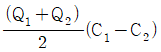
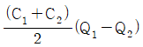
- ⅠC2Q1-C2Q2Ⅰ
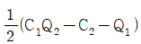
(정답률: 80%)
9. 통행분포(Trip distribution) 교통량 추정에 사용되는 Detroit법, Fratar법은 주로 어떤 경우에 사용되는가?
- 교통 패턴의 변화가 큰 경우
- 교통 패턴의 변화가 작은 경우
- 사회경제활동의 변화가 큰 경우
- 장래에 교통 여건의 변화가 큰 경우
(정답률: 알수없음)
10. 요금수준, 서비스의 질과 양, 이외에 대중교통 운영자 측에서 조정할 수 없는 변수의 변화에 따른 승객교통량을 상대적으로 추정할 수 있는 개략적인 측정수단으로서 보편적으로 널리 이용되고 있는 방법은?
- 공급탄력성
- 수요탄력성
- 요금의 형평성
- 승객의 편리성
(정답률: 알수없음)
11. 2차로 도로에서 각 차량의 승용차 환산계수에 대한 설명으로 옳은 것은?
- 평지에서 트레일러 2.0이다.
- 평지에서 트럭 1.0이다.
- 구릉지에서 트럭 2.4이다.
- 구릉지에서 버스 3.0이다.
(정답률: 알수없음)
12. 경로 선택에서 어떤 경로를 이용하든지 경로통행시간이 동일하게 되는 상태를 무엇이라 하는가?
- 수요-공급의 평형
- 교통체계 전체의 평형
- 통행로 평형
- 이용자 평형
(정답률: 알수없음)
13. 버스의 통행을 우선시키는 방법 중 가장 종합적이고 적극적인 방법은 무엇인가?
- 버스전용도로제
- 버스전용차로제
- 버스 bay설치
- 버스우선신호제
(정답률: 알수없음)
14. 지점조사에서 얻은 차량 4대의 순간속도가 30, 40, 50, 60km/h일 경우 공간평균속도는?
- 45.0km/h
- 42.1km/h
- 47.6km/h
- 40.8km/h
(정답률: 알수없음)
15. 조사대상지역 밖에 출발지 혹은 목적지를 가진 통행을 조사하는 것으로 코든 라인을 통과하는 주요 지점에서 조사 지역으로 유입ㆍ유출하는 차량을 조사하는 방법은?
- 폐쇄선조사
- 스크린라인조사
- 터미널승객조사
- 차량번호판조사
(정답률: 알수없음)
16. 공동배차제의 유형으로 적합하지 않은 것은?
- 노선공동관리
- 운전자공동관리
- 수입금공동관리
- 차량공동관리
(정답률: 알수없음)
17. 다음의 교통 수요관리 기법 중 주요 관리대상이 다른 하나는?
- 10부제 실시
- 남산의 혼자통행료 징수
- 버스 전용차로제
- 공공주차장의 주차요금 징수
(정답률: 알수없음)
18. 통행발생량(Trip Generation)을 추정하기 위하여 각 변수를 이용하여 여러 회귀식을 만든 경우 적정 회귀식을 선택하는 방법으로 옳은 것은?
- 종속변수를 설명하는 독립변수의 숫자가 많은 것을 선택한다.
- 결정계수(coefficient of determination : R2)가 0에 가까운 회귀식을 선택한다.
- 가능한 상수항의 값이 작은 회귀식을 선택한다.
- 종속변수와 독립변수간의 부호가 적정한 회귀식을 선택한다.
(정답률: 알수없음)
19. 현재 인구가 50만명인 도시가 있다. 이 도시의 인구 증가율이 5%일 경우 12년 후의 인구를 등차급수법에 의해 산정하면 몇 명이 될 것인가?
- 180만명
- 150만명
- 100만명
- 80만명
(정답률: 알수없음)
20. 자동차에 사람이나 화물을 실은 채 철도로 운반하는 복합교통시스템은?
- Piggyback 시스템
- Car Ferry
- Container
- 복합버스 시스템
(정답률: 알수없음)
2과목: 교통공학
21. 다음 중 도로시설의 용량산정에 추월시거가 적용되는 도로 시설은?
- 2차로도로
- 다차로도로
- 간선도로
- 고속도로
(정답률: 알수없음)
22. 차량의 정지거리는 공주거리와 제동거리로 구성된다. 제동거리에 대한 설명으로 틀린 것은?
- 비가 오는 날은 길어진다.
- 노면의 상태, 타이어의 상태와 관계가 있다.
- 노면의 스키드마크를 측정하여 구할 수도 있다.
- 반응속도가 빠른 사람은 제동거리를 줄일 수 있다.
(정답률: 알수없음)
23. 승용차 환산계수 산정에 영향을 주는 요소가 아닌 것은?
- 차량의 종류
- 경사의 길이
- 경사도
- 차로폭
(정답률: 알수없음)
24. 신호교차로에 관한 용어의 설명 중 옳지 않은 것은?
- 임계차로군 : 주어진 신호현시 동안 가장 큰 임계 V/C 값을 갖는 차로군
- 제어지체 : 신호제어로 인해 차로군이 속도를 줄이거나 정지함에 따른 지체
- 진행연장시간 : 황색신호가 켜지면 교차로 안이나 가까이에서 진행하던 차량은 정지선에 급정거를 할 수 없으므로 황색신호의 일부분을 녹색신호처럼 불가피하게 이용하는 시간
- 양방 보호좌회전 신호 : 서로 마주 보는 접근로의 좌회전이 동일 현시에 진행하는 신호
(정답률: 알수없음)
25. 제동정지시거 계산시 장애물을 인지하고 브레이크 밟기까지 시간을 일반적으로 얼마를 고려하는가?
- 약 10초
- 약 5.0초
- 약 3.5초
- 약 2.5초
(정답률: 알수없음)
26. 신호교차로에서 차량의 녹색신호시간 후의 황색신호시간의 길이를 산정할 때 고려되는 요소와 가장 거리가 먼 것은?
- 인지-반응시간
- 교차로 진입차량의 감속도
- 교차로 횡단길이
- 정지선의 폭
(정답률: 알수없음)
27. 어떤 신호등 교차로에서 녹색시간 60초, 황색시간 4초, 출발손실시간 2초, 진행연장시간 1.5초, 소거손실시간 2.5초 일 때 유효 녹색시간은?
- 59.5초
- 60.5초
- 62초
- 64초
(정답률: 알수없음)
28. 한 가로의 첨두시간 교통량이 1500대/시간, 이 첨두시간 중 15분간의 최대교통량이 450대이었다. 이 가로의 첨두시간 계수(peak-hour factor)는?
- 0.78
- 0.83
- 0.88
- 0.93
(정답률: 알수없음)
29. 교통 계획 대상 지역안에 있는 주요 교통문제 지역 50개소에 대한 교통조사를 실시하려한다. 가장 효율적인 조사계획은 어떤 것인가?
- 조사지점수가 그리 많지 않으므로 24시간 동안 차종별 방향별 교통량을 조사한다.
- 24시간 교통량은 대표적인 곳에서만 조사하고 나머지는 16시간(7~23시)만 조사한다.
- 모든 장소에서 출퇴근시간대, 점심시간대에 대해서 조사한다.
- 24시간 교통량은 대표적인 곳에서만 조사하고 나머지는 출퇴근 시간대에만 조사한다.
(정답률: 알수없음)
30. 어느 교차로의 한 접근로의 지체도 조사결과가 다음표와 같다. 신호의 주기가 130초, 조사단위시간이 16초이면 접근차량당 평균지체도는 얼마인가? (단, 같은 조사시간의 교통량은 총 95대 였다.)
- 6.6(초/대)
- 9.1(초/대)
- 12.3(초/대)
- 13.5(초/대)
(정답률: 알수없음)
31. 교통통제시설의 기본요구조건을 충족시키기 위한 고려사항과 가장 관계가 먼 것은?
- 동일한 상황일지라도 경우에 따라서 통제설비를 다양하게 사용할 필요가 있다.
- 판독성과 시인성을 유지하도록 규칙적인 유지보수가 필요하다.
- 시야에 들어오고, 충분히 반응할 수 있는 시간이 확보되는 곳에 위치해야 한다.
- 운전자들의 주의가 집중되고 운전자들이 빨리 순응 할 수 있도록 설계되어야 한다.
(정답률: 알수없음)
32. 신호교차로의 용량분석시 적용되는 이상적인 조건이 아닌 것은?
- 경사가 없는 접근로
- 차로폭 3.0m
- 교통류는 직진이며 모두 승용차로 구성
- 측방여유폭 1.5m 이상
(정답률: 알수없음)
33. T형 교차로에서 보조도로에서 주도로로 진입하는 교통량 중 50%가 우회전, 50%가 좌회전을 하고 있다. 5대의 차량이 보조도로에서 주도로에 진입할 때 우회전 차량이 2대 이하인 경우의 확률은?
- 0.31
- 0.50
- 0.38
- 0.43
(정답률: 알수없음)
34. 교통량(q)과 속도(u) 및 밀도(k)의 관계식을 바르게 표시 한 것은?
- q=u/k
- q=u×k
- q=k/u2
- q=u×k2
(정답률: 알수없음)
35. 신호체계의 구성요소 중 차량출현 여부, 교통량, 속도 및 점유율 등의 교통정보를 수집하는 역할을 하는 것은?
- 관제센터
- 신호등
- 제어기
- 검지기
(정답률: 알수없음)
36. 단속교통류에서 신호교차로의 용량 및 서비스 용량을 나타내기 위해 사용하는 포화교통류율의 단위로 어떤 것을 사용하는가?
- pcph
- pcu
- vph
- vphg
(정답률: 알수없음)
37. 지점 측정법을 이용하여 평균속도를 측정하였다. 이 평균 속도를 사용할 수 없는 경우는?
- 서비스 수준분석
- 사고조사
- 황색신호시간계산
- 속도제한구역설정
(정답률: 알수없음)
38. 신호등 교차로에서 지체시간을 계산할 때 연동계수는 어떤 종류의 지체에 적용하게 되어 있는가?
- 증가지체
- 균일지체
- 증분지체
- 추가지체
(정답률: 알수없음)
39. 한 도로구간의 밀도가 45대/km였다. Greenshields 모형의 직선관계식을 사용하여 속도를 구하면? (단, 자유속도는 100km/h, 혼잡밀도는 150대/km임)
- 30km/h
- 49km/h
- 62km/h
- 70km/h
(정답률: 알수없음)
40. 오전 첨두시인 08:00~09:00의 교통량을 15분 단위로 조사한 결과가 각각 1,200대, 1,400대, 1,100대, 1,000대 라고 할 경우 피크시간계수(PHF)는 얼마인가?
- 0.84
- 0.73
- 0.54
- 0.48
(정답률: 알수없음)
3과목: 교통시설
41. 버스정류장의 제원 중 고속도로인 경우 도로의 설계속도가 100 kph 일 때 감속차로의 길이는?
- 75m
- 100m
- 140m
- 160m
(정답률: 알수없음)
42. 다음 중 곡선반경을 설계하기 위하여 사용하는 공식은? (단, R=곡선반경, V=설계속도, f=마찰계수, λ=편경사)
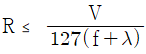
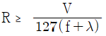
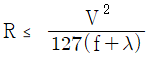
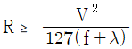
(정답률: 알수없음)
43. 도로의 설계속도가 80km/h일 때 최소평면곡선반경은? (단, 최대편경사 6%)
- 200m
- 280m
- 360m
- 440m
(정답률: 알수없음)
44. 주차원단위법의 종류에 해당되지 않는 것은?
- 건물연면적 원단위법
- 교통량 원단위법
- 주차발생 원단위법
- 누적주차 원단위법
(정답률: 알수없음)
45. 다음 중 설계속도와 가장 관계가 먼 것은?
- 시거
- 편경사
- 곡선반경
- 횡단구배
(정답률: 알수없음)
46. 고속도로의 인터체인지 설치시 주변지역이 소도시가 존재하고 있는 평야일 경우 표준설치 간격은 얼마인가?
- 5km 이내
- 5~10km
- 15~25km
- 30~40km
(정답률: 알수없음)
47. 평면교차로에서 도류화의 설치목적에 관한 설명으로 틀린 것은?
- 차량이 합류, 분류 및 교차하는 위치와 각도를 조정 한다.
- 차량이 진행해야 할 경로를 명확히 하고 주된 이동류에 우선권을 제공한다.
- 보행자 안전지대 설치장소와 교통통제설비를 잘 보이는 곳에 설치하기 위한 장소를 제공한다.
- 차량간의 상충면적을 넓게 늘려준다.
(정답률: 알수없음)
48. 평면교차로 설계의 기본 원칙에 대한 설명으로 옳지 않은 것은?
- 교차각은 되도록 직각에 가깝게 한다.
- 네 갈래 이상의 여러 갈래 교차로를 설치하여서는 안된다.
- 엇갈림 교차, 굴절교차 등의 변형교차는 피해야 한다.
- 교차로의 기하구조와 교통관제방법이 조화를 이루도록 한다.
(정답률: 알수없음)
49. 도시고속도로 및 지방부 일반도로에 설치되는 중앙분리대의 최소폭은?
- 도시고속도로 1.5m, 일반도로 1.0m
- 도시고속도로 2.0m, 일반도로 1.5m
- 도시고속도로 2.5m, 일반도로 2.0m
- 도시고속도로 3.0m, 일반도로 2.5m
(정답률: 알수없음)
50. 버스정류장의 길이를 결정할 때 고려할 사항이다. 해당되지 않는 것은?
- 설계속도
- 도로의 형태
- 차량 혼합율
- 버스 정차로의 길이
(정답률: 알수없음)
51. 지방지역 고속도로의 평지 및 산지의 설계속도는?
- 산지 60km/h, 평지 80km/h
- 산지 80km/h, 평지 100km/h
- 산지 100km/h, 평지 120km/h
- 산지 120km/h, 평지 140km/h
(정답률: 알수없음)
52. 횡단보도 육교의 구조에 대한 설명 중 옳지 않은 것은?
- 보행자 수가 1분당 70인 일 때 최소폭은 1.5m이다
- 계단인 경우 경사도는 50%(높이/밑변) 이하여야 한다.
- 보도육교의 높이가 2m를 초과할 경우에는 계단참을 설치해야 한다.
- 난간의 높이는 1m이상, 폭은 10cm 이상이다.
(정답률: 알수없음)
53. 비상주차대에 대한 설명으로 틀린 것은?
- 고속도로에서 우측 길어깨의 폭원이 3.0m 미만일 경우에는 비상주차대를 설치하여야 한다.
- 고속도로에서의 비상주차대의 설치간격은 750m를 표준으로 한다.
- 지방지역 일반도로에서의 비상주차대의 설치간격은 750m를 표준으로 한다.
- 도시고속도로, 주간선도로로서 우측 길어깨의 폭원이 2.0m 미만일 경우에는 계획교통량이 적은 경우를 제외하고 비상주차대를 설치해야 한다.
(정답률: 알수없음)
54. 도시지역에서 일반도로 중 주간선도로를 설계시 적용할 설계속도로서 바람직 한 값은?
- 100km/h
- 80km/h
- 60km/h
- 50km/h
(정답률: 알수없음)
55. 도로와 철도가 부득이 평면교차를 할 경우, 그 도로의 구조에 관한 설명 중 옳지 않은 것은?
- 건널목 양쪽에서 각각 30m 이내의 구간 (건널목 부분을 포함함)은 직선으로 한다.
- 건널목 양쪽에서 각각 30m 이내의 구간의 도로의 종단 경사는 3% 이하로 한다.
- 도로와 철도와의 교차각은 35도 이상으로 한다.
- 건널목에서 철도차량의 최고속도 50km/h 미만에서 가시구간의 최소길이는 110m 이다.
(정답률: 알수없음)
56. 다음의 주차수요 예측 방법 중 사람통행에 기초하여 예측함으로써 도심지역 등 특정지역에 대한 중ㆍ장기 주차수요 예측에 유익한 방법은?
- 주차발생원단위법
- 누적주차수요법
- P요소법
- 과거추세 연장법
(정답률: 알수없음)
57. 주차장의 설계기준 자동차를 결정할 때 고려해야 할 사항과 가장 거리가 먼 것은?
- 주차장이 피크로 될 때에 가장 영향을 주는 차종을 설계기준 자동차로 한다.
- 설계기준 자동차는 장래의 차량 치수변화를 고려하여 결정한다.
- 주차장의 공간을 효과적으로 이용하면서 질서있는 주차를 기대할 수 있는 차량이어야 한다.
- 과대한 차량은 설계차량으로 사용하지 않는다.
(정답률: 알수없음)
58. 다음 중 버스정류장의 설치위치로 가장 적당하지 않은 곳은?
- 직선구간
- 표준치 이상의 곡선반경을 갖는 구간
- 종단경사가 작은 구간
- 연결로의 전방
(정답률: 알수없음)
59. 다음의 ()안에 알맞은 말은?
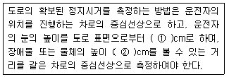
- ①100, ②15
- ①120, ②10
- ①110, ②12
- ①120, ②15
(정답률: 알수없음)
60. 설계속도가 80km/h인 왕복 2차로 도로의 편경사 접속설치율은 1/150이다. 도로중심선의 표고가 일정하다고 가정하고, 도로중심선은 중심으로 편경사(편구배)를 적용할 때, 도로중심선에서 4m 떨어진 길어깨의 표고가 30cm 변하는데 필요한 접속설치길이는?
- 45m
- 40m
- 35m
- 30m
(정답률: 알수없음)
4과목: 도시계획개론
61. 다음 중 도시화의 지표라고 할 수 없는 것은?
- 인구의 정착현상
- 생활기능의 이동성
- 인구의 분산현상
- 생활기능의 공간적 분화성
(정답률: 알수없음)
62. 계획수립 과정은 계획가에 따라 그 표현은 조금씩 다르나 공통된 사항은 계획활동이 순서적으로 이루어져야 하며 전후의 관련사항을 검토하는 연쇄적 작업이어야 한다는 것이다. 다음 4가지 단계 중 3번째 단계에 속하는 것은 어느 것인가?
- 대안평가
- 계획수행
- 목적설정
- 대안작성
(정답률: 알수없음)
63. 다음 중 주 구내의 주거단위에 직접 접근되는 도로로서 이동성이 가장 낮고 접근성이 가장 높은 도로는?
- 주간선도로
- 보조간선도로
- 집산도로
- 국지도로
(정답률: 알수없음)
64. 우리나라 도로간의 배치간격 기준으로 올바른 것은?
- 주간선도로와 주간선도로의 배치간격 : 2km 내외
- 주간선도로와 보조간선도로의 배치간격 : 1km 내외
- 보조간선도로와 집산도로의 배치간격 : 250m 내외
- 집산도로와 국지도로의 간격 : 500m 내외
(정답률: 알수없음)
65. 초등학교를 중심으로 한 단위이며, 어린이공원, 운동장, 우체국, 동사무소 등이 설립되는 생활권의 범위를 무엇이라 하는가?
- 인보구
- 유보구역
- 근린주구
- 근린분구
(정답률: 알수없음)
66. 다음 중 시가지내에서 보행환경을 개선하기 위한 사항과 가장 관계가 먼 것은?
- 보행자 전용도로 개설
- 유효보도폭원 확폭
- 횡단보도시설 입체화
- 가변차로 신호체계의 도입
(정답률: 알수없음)
67. 주거단지내 보행자 전용도로 계획에 대한 설명 중 적합하지 않은 것은?
- 보행자전용도로를 따라 학교, 상가 등 생활편익시설에 연계되도록 계획한다.
- 블록 내에서 단절되지 말아야 하며, 다른 시설들로부터 방해를 받지 말아야 한다.
- 자동차와의 분리와 토지이용의 효율성을 고려하여 건축물 후면이나 지하 혹은 지상 데크로 계획한다.
- 보행자전용도로의 교차부분에는 대화ㆍ휴게 공간을 조성하여 주민들의 유구에 부응하도록 계획한다.
(정답률: 80%)
68. 도시하부구조는 다음 중 무엇을 말하는가?
- 도시생활 편익시설
- 도시의 공원, 녹지시설
- 도시의 기반시설
- 주택등 도시생활에 필요한 기본시설
(정답률: 알수없음)
69. 다음 중 하워드(E. Howard)가 제시한 전원도시의 요건에 해당되지 않는 것은?
- 인구규모의 확대
- 토지의 공개념
- 경제적 가족성
- 개발이익의 사회환원
(정답률: 알수없음)
70. 도시의 특성으로 볼 수 없는 것은?
- 높은 인구밀도
- 사회적 익명성 증가
- 1차 산업증가
- 사회적 개성화 증가
(정답률: 62%)
71. 도시규모에 따른 용도지역별 간선도로의 밀도가 가장 높은 지역은?
- 주거지역
- 상업지역
- 공업지역
- 녹지지역
(정답률: 알수없음)
72. 현행의 도시 및 주거환경정비법에 있어서 정비기반시설은 양호하나 노후ㆍ불량건축물이 밀집한 지역에서 주거환경을 개선하기 위하여 시행하는 사업은?
- 주택재건축사업
- 주택재개발사업
- 주거환경정비사업
- 도시환경정비사업
(정답률: 알수없음)
73. 도시계획시설의결정ㆍ구조및설치기준에관한규칙에 정의된 시설 중 교통시설에 포함되지 않는 것은?
- 도로
- 자동차정류장
- 화물적하시설
- 삭도
(정답률: 알수없음)
74. 격자형 도로망 구성형태에 대한 설명 중 틀린 것은?
- 지형이 평탄한 도시에 적합하다.
- 교통 흐름의 도심집중이 강하다.
- 고대 및 중세 봉건도시에서 흔히 볼 수 있다.
- 도로기능의 다양성이 결여된다.
(정답률: 알수없음)
75. 다음 중 공공이익의 요소에 해당되지 않는 것은?
- 안전성
- 편의성
- 공공의 경제성
- 신속성
(정답률: 알수없음)
76. 토지구획정리사업에 있어서의 환지설계방법 중 교통 여건, 토지이용상황 등 모든 요건이 토지가격에 의해 나타난다는 전제 하에 사업전의 토지가격을 사업종료후의 토지가격에 비례하여 환지하는 방식은?
- 비례식 환지
- 평가식 환지
- 면적식 환지
- 절충식 환지
(정답률: 알수없음)
77. 상업지역의 종류가 아닌 것은?
- 준 상업지역
- 중심상업지역
- 유통상업지역
- 근린상업지역
(정답률: 알수없음)
78. 다음 중 아테네 헌장(The charta of Athene)과 가장 관계가 깊은 것은?
- 대도시 확산방지
- 지구상세 계획
- 토지이용의 기능별 분리
- 대도시의 다핵화
(정답률: 알수없음)
79. 토지이용분류 방식에 관한 설명 중 틀린 것은?
- 우리나라는 지적법 상의 지목에 의한 분류방식을 채택하고 있다.
- 지목이란 각각의 필지에 지정된 토지의 사용방법 또는 현황을 나타낸다.
- 지목은 모두 28종으로 분류되어 있다.
- 토지개발의 필요에 따라서는 하나의 필지가 1개 이상의 지목을 가질 수도 있다.
(정답률: 알수없음)
80. 19세기 중반 파리대개조운동을 전개한 사람은?
- Lynch
- Haussmann
- Mumford
- Hall
(정답률: 알수없음)
5과목: 교통관계법규
81. 다음 중 도로법에 정의된 도로부속물에 속하지 않는 것은?
- 도로표지
- 신호기
- 가로등
- 도로수선용재료적치장
(정답률: 알수없음)
82. 도로교통법상 차도의 정의로 알맞은 것은?
- 자동차만이 다닐 수 있고 자전거 등은 다닐 수 없도록 설치된 도로의 부분
- 자동차의 고속교통에만 사용하기 위하여 지정된 도로의 부분
- 연석선, 안전표지나 그와 비슷한 공작물로써 경계를 표시하여 모든 차의 교통에 사용하도록 된 도로의 부분
- 유모차와 신체장애자용 차가 통행하도록 설치된 도로 부분
(정답률: 알수없음)
83. 도시교통정비촉진법에 의한 연차별시행계획에 포함되지 않는 것은?
- 교통안전시설의 확충계획
- 교차로의 평면화계획
- 역세권 주차장 등 환승시설의 확충
- 대중교통운행체계의 개선
(정답률: 알수없음)
84. 다음 중 버스전용차로의 설치권자는?
- 건설교통부장관
- 관할지방경찰청장
- 관할시장
- 관할경찰서장
(정답률: 알수없음)
85. 폭우, 폭설, 안개 등으로 가시거리가 100미터 이내인 때에는 평상의 최고속도에서 얼마를 줄인 속도로 운행하여야 하는가?
- 100분의 50
- 100분의 40
- 100분의 30
- 100분의 20
(정답률: 알수없음)
86. 다음의 ()안에 들어갈 말로 알맞은 것은?
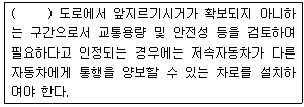
- 2차로
- 3차로
- 4차로
- 5차로
(정답률: 알수없음)
87. 위락시설의 부설주차장 설치기준으로 옳은 것은?
- 시설면적 50m2당 1대
- 시설면적 100m2당 1대
- 시설면적 120m2당 1대
- 시설면적 200m2당 1대
(정답률: 알수없음)
88. 지적이 표시된 지형도에 도시관리계획사항을 명시한 도면을 작성할 때 일반적으로 작성되는 도면의 축척은?
- 1/300 내지 1/500
- 1/500 내지 1/1500
- 1/3000 내지 1/8000
- 1/60000 내지 1/25000
(정답률: 72%)
89. 노외주차장인 주차전용건축물의 용적률 기준은?
- 100%이하
- 500%이하
- 1000%이하
- 1500%이하
(정답률: 알수없음)
90. 도시교통정비촉진법상의 교통수단의 범위에 속하지 않는 것은?
- 승용자동차
- 화물자동차
- 원동기장치자전거
- 특수자동차
(정답률: 알수없음)
91. 도로관리심의회의 위원장으로 옳지 않은 것은?
- 고속도로 : 정부투자기관관리기본법의 규정에 의한 한국도로공사의 상임이사
- 일반도로 : 지방국토관리청장
- 특별시도ㆍ광역시도ㆍ지방도 : 당해 특별시ㆍ광역시 또는 도의 도로업무를 담당하는 4급이상의 공무원으로서 당해 톡별시장ㆍ광역시장 또는 도지사가 임명하는 자
- 시도ㆍ군도ㆍ구도 : 당해 시ㆍ군 또는 구의 시장ㆍ군수 또는 구청장
(정답률: 알수없음)
92. 다음의 용도지구에 대한 설명 중 옳지 않은 것은?
- 경관지구는 경관을 보호ㆍ형성하기 위하여 필요한 지구이다.
- 방재지구는 풍수해, 산사태, 지반의 붕괴 그 밖의 재해를 예방하기 위하여 필요한 지구이다.
- 취락지구는 주거기능, 상업기능을 집중적으로 개발ㆍ정비할 필요가 있는 지구이다.
- 시설보호지구는 학교시설ㆍ공용시설ㆍ항만 또는 공항의 보호, 업무기능의 효율화, 항공기의 안전운항 등을 위하여 필요한 지구이다.
(정답률: 알수없음)
93. 도시교통의 원활한 소통과 교통시설의 효율적인 이용을 위하여 일정한 지역에서 교통수요관리를 시행할 필요가 있다고 인정될 때 교통수요관리시행을 할 수 있는 자는?
- 국무총리
- 건설교통부장관
- 시장
- 도지사
(정답률: 알수없음)
94. 고속국도법에 명시된 고속국도에 관한 설명 중 옳지 않은 것은?
- 고속국도는 대통령령으로 그 노선을 지정한다.
- 고속국도의 도로관리청은 행정자치부장관으로 한다.
- 고속국도와 도로ㆍ철도ㆍ궤도를 상호 교차시키고자 할 때는 특별한 사유가 없는 한 입체교차시설로 하여야 한다.
- 고속국도는 자동차교통망의 중축부분을 이루는 중요한 도시를 연락하는 자동차전용의 고속교통에 공하는 도로이다.
(정답률: 알수없음)
95. 환경ㆍ교통ㆍ재해등에 관한 영향평가법에서는 평가서를 작성함에 있어서 대통령령이 정하는 바에 따라 설명회 또는 공청회를 개최하여 대상사업의 시행으로 인하여 영향을 받게되는 지역안의 주민의 의견을 듣고 이를 평가서 내용에 포함시키도록 하고 있다. 다음 중 교통영향평가만을 실시하는 사업의 경우 의견수렴을 제외할 수 있는 경우에 해당하지 않는 것은?
- 교통영향평가 대상 사업 중 지방교통영향심의위원회의 심의대상인 사업
- 교통영향평가 대상 사업 중 최소영향평가대상 규모의 10배인 복합용도의 시설
- 교통영향평가 대상 사업 중 최소영향평가대상 규모의 5배인 판매 시설
- 교통영향평가 대상 사업 중 최소영향평가대상 규모의 10배인 관람집회 시설
(정답률: 알수없음)
96. 다음 중 평균운행속도에 대한 설명으로 맞는 것은?
- 구간거리를 평균주행시간으로 나누어 구한다.
- 도로상의 일정구간을 통과하는 관측차량의 조화평균 속도를 의미한다.
- 구간거리를 지체시간을 포함한 차량운행시간으로 나누어 구한다.
- 도로상의 일정지점을 통과하는 관측차량의 산술평균 속도를 의미한다.
(정답률: 알수없음)
97. 주차장외의 용도로 사용되는 부분이 운동시설인 경우에는 주차장으로 사용되는 부분의 비율이 얼마이상이어야 주차전용건축물로 보는가?
- 80%
- 70%
- 65%
- 60%
(정답률: 알수없음)
98. 다음의 ()안에 들어갈 말로 알맞은 것은?
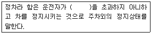
- 1분
- 3분
- 5분
- 10분
(정답률: 알수없음)
99. 총중량 2,000㎏에 미달하는 자동차를 그의 3배 이상의 총 중량인 견인자동차가 아닌 자동차로 견인하여 도로(고속도로를 제외한다)를 통행하는 때의 속도는?
- 15km/h이내
- 20km/h이내
- 25km/h이내
- 30km/h이내
(정답률: 알수없음)
100. 도로의 관리청은 도로경계선으로부터 얼마를 초과하지 아니하는 범위안에서 접도구역을 지정할 수 있는가? (단, 고속국도 제외)
- 50m
- 40m
- 30m
- 20m
(정답률: 알수없음)
6과목: 교통안전
101. 어느 사고다발지점에 대해 개선사업을 실시한 경우 운전자가 변화된 도로환경에 따라 전보다 주의력을 감소시킴으로써 당초 의도한 개선대책의 효과를 상쇄시키는 경향이 있다. 이러한 경향은 무슨 현상 때문인가?
- 평균으로의 회귀효과(Regression to Mean Effect)
- 위험보정(Risk Compensation)
- 사고이동(Accident Migration)
- 주관적위험(Subjective Risk)
(정답률: 알수없음)
102. 교통사고 조사시 사고 현장의 도로상에서 발견되는 타이어마크(Tire mark)로서 다음 그림과 같은 모양으로 생성되는 마크를 무엇이라 부르는가?
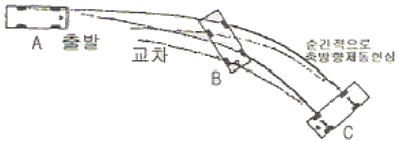
- 스키드마크(Skidmark)
- 요마크(Yawmark)
- 임프린트(Imprint)
- 스킵 스키드마크(Skip skidmark)
(정답률: 알수없음)
103. 사고가 사고발생의 근원에서 시작하여 다음 요인이 생기게 되고 그것이 또다른 요인을 일으키게 하는 형태의 사고형을 무슨형이라 하는가?
- 집중형
- 연쇄형
- 단순형
- 복합형
(정답률: 알수없음)
104. 전ㆍ후륜의 하중이 유사한 차량이 곡선미끄럼을 하여 각 바퀴의 미끄럼흔적의 길이가 다음과 같을 때 이 차량의 미끄럼 거리는?
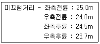
- 23.7m
- 24.3m
- 24.7m
- 25.0m
(정답률: 알수없음)
1⑤. 어떤 장소에서 짧은 시간 동안 수시로 충돌에 근접하는 교통현상을 관측하여 그 장소의 교통사고위험성을 평가하는 방법은?
- 회귀분석모형법
- Rate-Quality Control
- 사고율법
- 교통상충 조사방법
(정답률: 알수없음)
106. 교통사고 내재적 조건 중에서 사고건수가 가장 많은 것은?
- 조작
- 인지
- 판단
- 운전조건
(정답률: 알수없음)
107. 도로의 교각, 교대, 옹벽 등에 충격 흡수시설을 설치하면 차량충돌시 인명피해를 감소시킬 수 있다. 다음 중 충돌 차량의 운동 에너지를 프라스틱 주머니속의 물을 배출시켜 소산시키는 충격흡수 시설은 어느 것인가?
- 철제드럼(Drum)
- 하이드로 셀 샌드위치(Hydro Cell Sandwich)
- 모래 채우기 플라스틱 통
- 하이드라이 셀 샌드위치(Hi-dri Cell Sandwich)
(정답률: 84%)
108. 교통사고 조사에서 차량에 충돌력이 가해진 상황을 나타내는 그림을 충돌력 상황도(Thrust diagram)라 부른다. 다음 중 이 그림에 나타내는 내용이 아닌 것은?
- 충돌력의 방향
- 충돌력이 가해진 위치
- 도로상의 최초접촉지점(First Contact Point)
- 차량의 회전방향
(정답률: 알수없음)
109. 운전 중 운전자의 일반적인 행동 특성을 바르게 기술한 것은?
- 앞차의 거동을 따라하지 않으려고 한다.
- 익숙하지 않은 도로구조를 만나면 판단을 빨리 할 수있다.
- 긴급시에는 하번에 하나의 조작 밖에 하지 못한다.
- 장시간 자극과소상태가 되면 반응은 빨라진다.
(정답률: 알수없음)
110. 사고다발지점 선정 방법 중에서 물피사고(PDO사고)를 기준으로 하여 각 사고 유형마다 가중치를 부여하여 합계점수가 가장 높은 지점을 선정하는 방법을 무엇이라 부르는가?
- 사고발생 빈도수에 의한 방법
- 사고율에 의한 방법
- 사고피해 정도에 의한 방법
- 위험도지수에 의한 방법
(정답률: 알수없음)
111. 교통사고예방 또는 피해를 경감시키기 위한 각종대책을 3E라고 구분하여 분류하는데 다음 중 이와 관련이 없는 것은?
- 공학(Engineering)
- 환경(Environment)
- 교육(Education)
- 규제(Enforcement)
(정답률: 알수없음)
112. 다음 중 교통사고의 원인분석을 위한 단계가 순서대로 올바르게 구성된 것은?
- 자료정리-충돌도 및 현황도-현장조사-사고지점개선
- 현장조사-자료정리-사고지점개선-충돌도 및 현황도
- 자료정리-충돌도 및 현황도-현장조사-문제점파악
- 충돌도 및 현황도-자료정리-사고지점개선-현장조사
(정답률: 알수없음)
113. 다음 중 가장 단순하고 가장 직접적인 접근이며, 소도읍의 가로망, 대도시의 지역가로망 및 교통량이 적은 지방부 도로에 효율적으로 사용될 수 있는 위험지점 선정기법은?
- 사고건수법
- 사고율법
- 사고건수-율법
- 율-품질관리법
(정답률: 알수없음)
114. 다음의 교통안전 조치 중 이동성과 상충되는 조치는?
- 에어백
- 교통진정
- 충격완화시설
- 비상서비스 개선
(정답률: 알수없음)
115. 어떤 차량이 노면 마찰계수가 0.7인 도로에서 앞 차량과의 추돌을 피하기 위해 급정거하여 15.5m를 미끄러진 후 정지하였을 때 이 차량의 미끄러지기 전의 속도는 다음 중 어느 것인가?
- 42.38km/h
- 52.37km/h
- 59.43km/h
- 60.97km/h
(정답률: 알수없음)
116. 20km의 도로구간에서 1년동안 100건의 교통사고가 발생하였다. 조사결과 일평균교통량(ADT)가 12,000대일 때 차량 1억대ㆍkm당 사고율은 얼마인가?
- 54.2건
- 114.2건
- 164.1건
- 201.4건
(정답률: 알수없음)
117. 교통사고 재현시 교통사고 현장에서 조사해야 할 내용과 관계가 가장 먼 것은?
- 속도
- 방어적인 조치
- 도로상에서의 위치
- 운전자의 학력
(정답률: 알수없음)
118. 노측용 방호울타리를 설계할 때 차량의 충돌각도는 방호울타리 면으로부터 몇 도를 기준으로 하는가?
- 10도
- 15도
- 20도
- 30도
(정답률: 알수없음)
119. 도로안전개선 대책의 일환으로 미끄럼방지 포장을 시공해야 할 곳으로 적당하지 않은 것은?
- 내리막 구간
- 급커브 구간
- 등판 차로 구간
- 횡단 보도 전방
(정답률: 알수없음)
120. 율-품질관리법에서 가정하는 교통사고 발생분포는?
- 포아송 분포
- 이항분포
- 음지수분포
- 지수분포
(정답률: 알수없음)